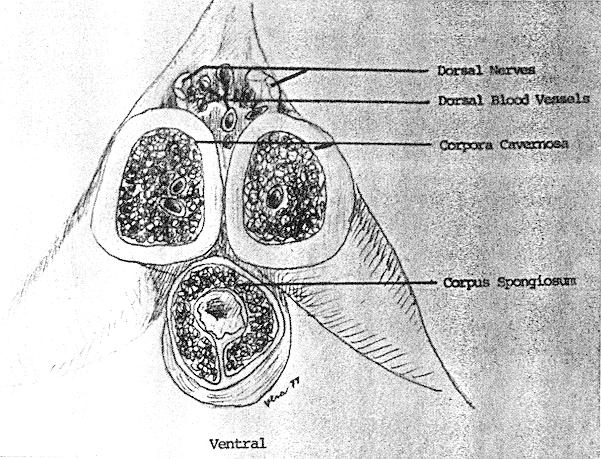
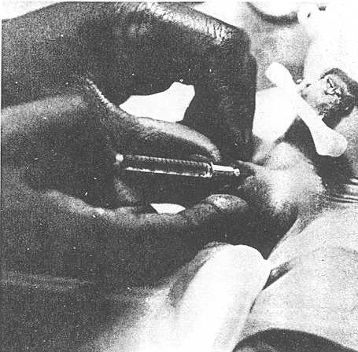

THE CIRCUMCISION REFERENCE LIBRARY
Circumcision is the only surgical procedure, excluding cord clamping and cutting, which is routinely performed on normal, healthy newborn infants, usually during the first two or three days of life. Apparently no analgesic technique has been described nor suggested in association with neonatal circumcision. This is the first description of a technique of penile dorsal nerve block in neonatal circumcision. In 52 instances using 0.5 ml of 1% lidocaine (Xylocaine) and a 1.2 cm number 27 gauge needle PDNB was successfully and safely introduced with consistent elimination of pain rendering NC a painless surgical procedure.
Christopher Kirya, M.B., Ch.B, D.C.H.,* and
Milton W. Werthman, Jr., M.D., F.A.A.P., Washington, D.C.
Circumcision has been practiced for centuries, being known in the era of the Pharaohs.1-4 In different parts of the world it is performed for different reasons.5-9 Whatever these may be, little if any attention has been paid to the pain endured by the infant, and consequently, elimination of this pain.
Anyone who circumcises a neonate, using any of the available techniques, sense the pain and stress that the manipulative stages of this procedure generate.9-11 During the procedure when the prepuce is clamped with the mosquito forceps, the infant cries vigorously, trembles, and tries to wriggle out of the restraint. He may eventually become plethoric, dusky, and mildly cyanotic because of the prolonged crying. Occasionally, this results in respiratory pauses or regurgitation of feedings. A pacifier may be offered or in some other rituals, a little wine is given to the baby, in the probable expectation that the procedure might be tolerable.6
The concept of regional nerve block is not new. It was the desire to extend this method of pain relief to the newborn infant, which prompted the development of this technique of PDNB for NC.
The equipment for the procedure is standard with the addition of a syringe, a 1.2 cm No. 27 guage needle, and 1% lidocaine (Xylocaine) without epinephrine.
ANATOMY OF THE PENIS
A brief review of the anatomy of the penis is indicated before the technique is described. The penis has two main nerves. Despite being bilateral the nerves are designated dorsal nerves and the vessels as dorsal vein and dorsal artery as shown in Fig. 1.
Abbreviations used
NC: neonatal circumcision
PNDB: penile dorsal nerve block
At the penile root the nerves emerge between the dorsal and Colles fascia in almost one sheath on either side of the penis. The surface anatomy of these two dorsal nerves corresponds to 10 and 2 o'clock positions at the root of the penis. Ramifications of these nerves usually commence 1 cm distal to the penile root. The ideal site for PDNB is just proximal to these ramifications.

Fig 1. Cross-section of the anatomy of the penile root.
Using the equipment previously described and using aseptic precautions, the 10 and 2 o'clock areas are identified and the depth of the penile root into the pubis is established. This identification is important because it will dictate the approximate point distal to the penile root (0.5 cm) into which the infiltration is to be made. It may be necessary in an occasional infant whose penile root is embedded in pubic fat, to block the nerves at the junction of the pubic and penile skin.
Stabilizing the organ with gentle traction of the skin of the penis, at an angle of about 20 to 25 degrees, the skin is pieced at one of the dorsolateral positions and the needle advanced postermedially into the subcutaneous tissue (Fig. 2). The depth of the needle need not be more than 0.25 to 0.5 cm. There should be no further resistance felt after the skin is penetrated, the tip of the needle remaining freely movable. At this point infiltration of 0.2 to 0.4 ml of 1% lidocaine is made, taking great care to avoid accidental vascular injection. Under no circumstances should the infiltration be made as the needle is advanced or withdrawn. The same procedure is repeated at the other dorsolateral position.
Inevitably, since the penis is small, a circular lidocaine ring is formed and PDNB accomplished. The penis and prepuce should be insensitive to pain or pressure after two to three minutes.
It is emphasized that the total volume of lidocaine is should not exceed 0.8 ml, since a large volume could cause pressure to the organ with subsequent theoretical necrosis. The same concern obtains in regard to hematoma formation.

Fig. 2 Injection of the local anesthetic.
Fifty-two infants were circumcised after PDNB. One percent lidocaine volume ranged between 0.4 to 0.8 ml with an average of 0.5 ml. In all but two infants the response was excellent, demonstrated by too distal an injection on the left, since the child responded to painful stimuli with the application of forceps on that side only
Bleeding at the injection site did not occur, except in one case in which the right superficial dorsal vein was penetrated.
In all infants the lidocaine induced subcutaneous swelling at the penile root had disappeared in less than 24 hours after the procedure. Neither hematoma nor volume-induced pressure were observed.
To feel pain is one of the functions of normality, and every normal neonatel feels pain. The belief that infants "do not feel pain" or "won't remember it anyway" reflect concepts which cannot be substantiated. Nothing is known of the long-term effects of painful experiences sustained in the neonatal period on the subsequent shaping and realization of an infant's potential. Circumcision is painful and consequently stressful. Behavioral state in relation to stressful stimuli has been studied in the newborn infant and the endocrine response (adrenal) has been documented.9,12 Using PDNB, the neonate can be spared the pain of circumcision and its consequent stress. The technique developed and described herein virtually abolishes circumcision pain as shown by a quiet child during the operation.
No complications or untoward effects of lidocaine were encountered. The effect of lidocaine wore off completely within 30 minutes. The complications of circumcision described by others were not seen in this group.13-17
Caution must be exercised in introducing the 27 guage needle, lest an occasional large superficial vein be accidentally punctured. Also, too vertical an introduction of the needle can cause the tip to lodge in the erectile tissue. This would result in firm fixation of the needle tip and not the loose mobility characteristic of proper sub-cutaneous placement. Hematomas are avoided and volume-induced pressure is not evident since the quantity of lidocaine is small.
Until now, circumcision was known to both parents and doctor to be quite painful; hence, rarely were parents allowed to witness the procedure. Since the introduction of PDNB, marked relief is evident in the parents who either attend the ceremony or are invited to witness the circumcision. The response of the infants makes pain suppression desirable.
From the Georgetown Department of Pediatrics, Division of Neonatalogy, Columbia Hospital for Women, and Department of Perinatal-Neonatal Pediatrics, Washington Hospital Center.
*Reprint Address: Georgetown University, Department of Pediatrics, Neonatology Division, Columbia Hospital for Women, 2425 L St. N.W. Washington, D.C. 20037
http://www.cirp.org/library/pain/kirya1/